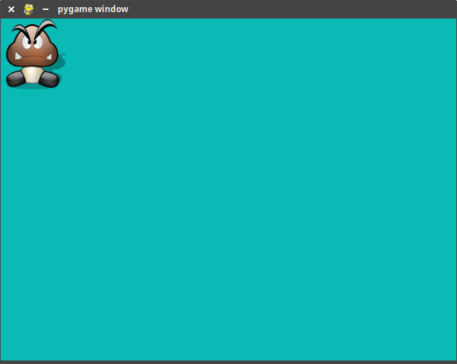
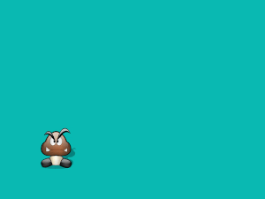

Initiation à Pygame⚓︎

0. Preambule⚓︎
Pygame est un package de Python facilitant la création de jeux basés une interface graphique. Vous pouvez :
- l'installer sur votre distribution Python, par pip3 install pygame.
- le tester directement via https://repl.it/, en choisissant pygame dans la liste des langages proposés.
1. Préparation de la scène du jeu⚓︎
1 2 3 4 5 6 7 8 9 10 11 12 13 | |
Ce code devrait vous donner ceci :

Commentaires
- Le package
syspermettra de fermer le programme au niveau de l'OS par la commandesys.exit() - La ligne
from pygame.locals import *permettra d'utiliser des variables locales déjà définies parpygame, commeMOUSEBUTTONDOWN, par exemple. - Durant tout le code, notre scène de travail sera l'objet
fenetre, dans lequel nous viendrons coller de nouveaux éléments.
Éléments structurants d'un code pygame :
- pygame.init() effectue une initialisation globale de tous les modules pygame importés. À mettre au début du code.
- pygame.display.flip() effectue un rafraîchissement total de tous les éléments graphiques de la fenêtre. À mettre donc plutôt vers la fin du code.
- while True : comme très souvent dans les jeux, la structure essentielle est une boucle infinie dont on ne sortira que par une interruption système (sys.exit()) où lors de la bascule d'un booléen. Pour l'instant, cette boucle est vide (pass ).
2. Apparition d'un personnage⚓︎
2.1. Téléchargement de l'image⚓︎
Nous allons travailler avec le sprite ci-dessous, nommé perso.png. Il est issu de https://openclassrooms.com/fr/courses/1399541-interface-graphique-pygame-pour-python/1399813-premieres-fenetres

Téléchargez-le pour le mettre dans le même dossier que votre code pygame.
Vous pouvez trouver sur internet un grand nombre de sprites libres de droits, au format png (donc gérant la transparence), dans de multiples positions (ce qui permet de simuler des mouvements fluides). Ici nous travaillerons avec un sprite unique.
2.2. Importation de l'image dans la fenêtre⚓︎
1 | |
convert_alpha() est appelée pour que soit correctement traité le canal de transparence (canal alpha) de notre image.
2.3. Affichage de l'image⚓︎
À ce stade, perso est un objet pygame de type Surface .
Afin de facilement pouvoir le déplacer, nous allons stocker la position de cet objet dans une variable position_perso, qui sera de type rect.
1 | |
blit() :
1 | |
▸ récapitulatif du code
1 2 3 4 5 6 7 8 9 10 11 12 13 14 15 16 17 | |
Aperçu

3. Gestion des évènements⚓︎
Lorsqu'un programme pygame est lancé, la variable interne pygame.event.get() reçoit en continu les évènements des périphériques gérés par le système d'exploitation.
Nous allons nous intéresser aux évènements de type KEYDOWN (touche de clavier appuyée) ou de type MOUSEBUTTONDOWN (boutons de souris appuyé).
3.1. Évènements clavier⚓︎
3.1.1. Exemple de code⚓︎
La structure de code pour détecter l'appui sur une touche de clavier est, dans le cas de la détection de la touche «Flèche droite» :
1 2 3 4 | |
K_RIGHT par pygame.
Le nom de toutes les touches peut être retrouvé à l'adresse https://www.pygame.org/docs/ref/key.html.
Remarque : c'est grâce à la ligne initiale
1 | |
K_RIGHT (et toutes les autres) est reconnue.
3.1.2. Problème de la rémanence⚓︎
Quand une touche de clavier est appuyée, elle le reste un certain temps. Parfois volontairement (sur un intervalle long) quand l'utilisateur décide de la laisser appuyée, mais aussi involontairement (sur un intervalle très court), lors d'un appui «classique».
Il existe donc toujours un intervalle de temps pendant lequel la touche reste appuyée. Que doit faire notre programme pendant ce temps ? Deux options sont possibles :
- option 1 : considérer que la touche appuyée correspond à un seul et unique évènement, quelle que soit la durée de l'appui sur la touche.
- option 2 : considérer qu'au bout d'un certain délai, la touche encore appuyée doit déclencher un nouvel évènement.
Par défaut,pygame est réglé sur l'option 1. Néanmoins, il est classique pour les jeux vidéos de vouloir que «laisser la touche appuyée» continue à faire avancer le personnage. Nous allons donc faire en sorte que toutes les 50 millisecondes, un nouvel appui soit détecté si la touche est restée enfoncée. Cela se fera par l'expression :
1 | |
3.2 Évènements souris⚓︎
3.2.1. Exemple de code⚓︎
La structure de code pour détecter l'appui sur un bouton de la souris est, dans le cas de la détection du bouton de gauche (le bouton 1) :
1 2 3 | |
3.2.2. Récupération des coordonnées de la souris⚓︎
Le tuple (abscisse, ordonnée) des coordonnées de la souris sera récupéré avec l'instruction pygame.mouse.get_pos().
4. Déplacement du personnage⚓︎
Le déplacement d'un personnage se fera toujours par modification de ses coordonnées (et visuellement, par effacement de la dernière position). Ce déplacement pourra être : - absolu : on donne de nouvelles coordonnées au personnage. - relatif : on indique de combien le personnage doit se décaler par rapport à sa position initiale.
4.1. Déplacement absolu⚓︎
Pour afficher le personnage à la position (100,200), on écrira :
1 | |
position_perso est l'objet de type rect contenant les coordonnées.
Exercice 1 : Réaliser un déplacement aléatoire, comme l'animation ci-dessous.

Vous pourrez utiliser les instructions :
- pygame.time.delay(1000) afin de ne bouger le personnage que toutes les 1000 millisecondes.
- randint(a,b) du package random, qui renvoie un entier pseudo-aléatoire entre a et b.
Proposition de correction (cliquer pour faire apparaître)
1 2 3 4 5 6 7 8 9 10 11 12 13 14 15 16 17 18 | |
4.2. Déplacement relatif⚓︎
Pour déplacer le personnage de 15 pixels vers la droite et de 10 pixels vers le haut par rapport à sa position précédente, on écrira :
1 | |
position_perso est l'objet de type rect contenant les coordonnées.
Exercice 2 :
Réaliser un contrôle au clavier du personnage, comme dans l'animation ci-dessous.
Proposition de correction (cliquer pour faire apparaître)
1 2 3 4 5 6 7 8 9 10 11 12 13 14 15 16 17 18 19 20 21 22 23 24 25 26 27 28 29 30 31 32 33 34 | |
5. À vous !⚓︎
Fabriquez le jeu que vous souhaitez à partir des informations ci-dessus. Bien d'autres aides peuvent être trouvées dans les liens citées dans la partie Bibliographie.
Exemple de réalisation possible : un clicker avec un temps qui diminue à progressivement, et comptage des points.

Quelques aides :
-
écrire du texte :
1 2 3
font = pygame.font.Font(pygame.font.get_default_font(), 36) text = font.render("Game Over", True, (255, 0, 0)) fenetre.blit(text, dest=(550,40)) -
dessiner un rectangle :
dessine un rectangle vert de 100 pixels sur 10 pixels, dont le coin en haut à gauche est à la position (500,20).1pygame.draw.rect(fenetre,(0,255,0),(500,20,100,10)) -
gérer le temps:
1 2 3 4 5 6 7 8
import time topchrono = time.time() delai = 5 sortir = False while sortir == False : if time.time() - topchrono > delai : print("5 secondes se sont écoulées") sortir = True
Bibliographie
- Documentation officielle de Pygame, https://www.pygame.org/docs/
- Cours d'OpenClassrooms, https://openclassrooms.com/fr/courses/1399541-interface-graphique-pygame-pour-python/1399813-premieres-fenetres.

G.Lassus, Lycée François Mauriac -- Bordeaux